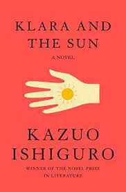
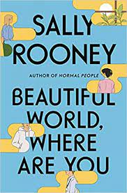

აქ არის კლარას ისტორია, ხელოვნური მეგობრის, გამორჩეული დაკვირვების თვისებების მქონე, რომელიც მაღაზიაში თავისი ადგილიდან ყურადღებით ადევნებს თვალს მათ ქცევას, ვინც დასათვალიერებლად შემოდის და მათ, ვინც ქუჩაში გადის გარეთ. იგი იმედოვნებს, რომ მომხმარებელი მას მალე აირჩევს. კლარა და მზე არის ამაღელვებელი წიგნი, რომელიც გვთავაზობს გადახედოს ჩვენს ცვალებად სამყაროს დაუვიწყარი მთხრობელის თვალით და ის, რომელიც იკვლევს ფუნდამენტურ კითხვას: რას ნიშნავს სიყვარული?

აქ შეგიძლიათ ჩაწეროთ შეკითხვა ან რაიმე აზრი ამ წიგნის მიმართ
მშვენიერი სამყარო, სად ხარ
7 September 2021
ალისა, რომანისტი, ხვდება ფელიქსს, რომელიც მუშაობს საწყობში და ეკითხება, სურს თუ არა მასთან ერთად რომში წასვლა. დუბლინში, მისი საუკეთესო მეგობარი, ეილინი, წყვეტს დაშორებას და ისევ ეფლირტავება საიმონთან, მამაკაცთან, რომელსაც ბავშვობიდან იცნობს. ალისა, ფელიქსი, ეილინი და საიმონი ჯერ კიდევ ახალგაზრდები არიან, მაგრამ ცხოვრება მათ წინ უსწრებს. მათ სურთ ერთმანეთი, ატყუებენ ერთმანეთს, იკრიბებიან, იშლებიან. მათ აქვთ სექსი, ზრუნავენ სექსზე, ზრუნავენ თავიანთი მეგობრობისა და სამყაროს შესახებ, რომელშიც ცხოვრობენ. დგანან ისინი სიბნელემდე ბოლო განათებულ ოთახში და მოწმობენ რაიმეს? იპოვიან ისინი მშვენიერი სამყაროს დასაჯერებლად?

აქ შეგიძლიათ ჩაწეროთ შეკითხვა ან რაიმე აზრი ამ წიგნის მიმართ